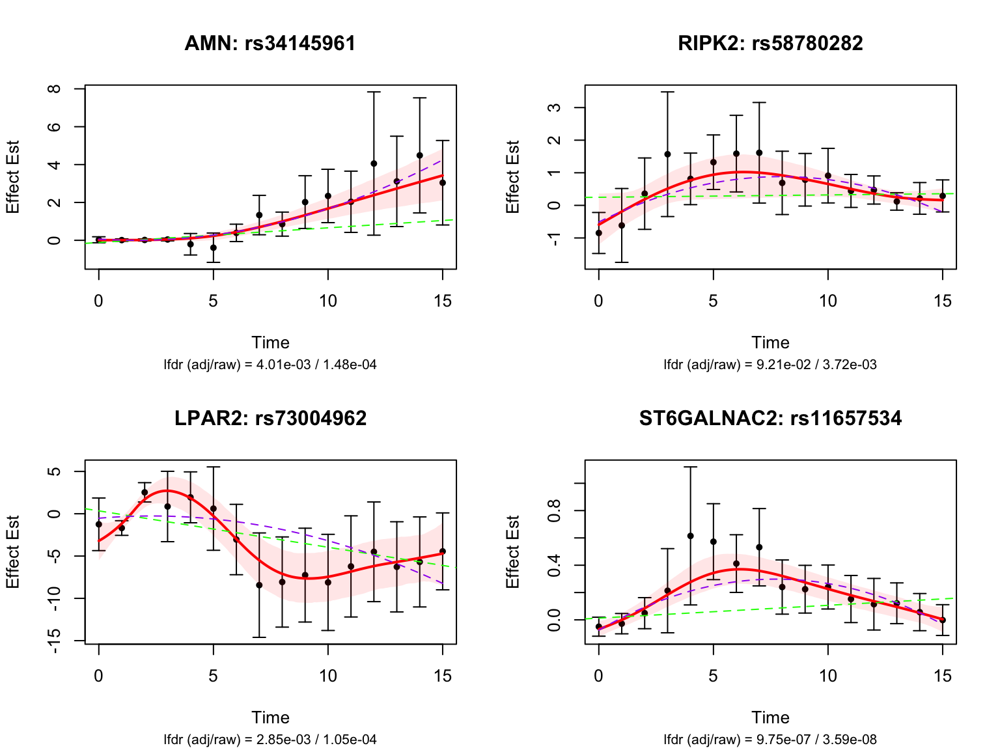
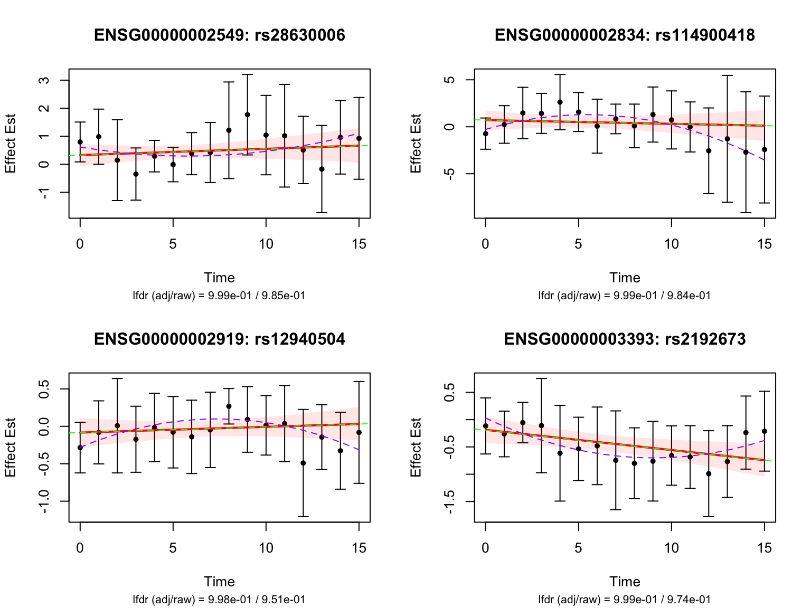
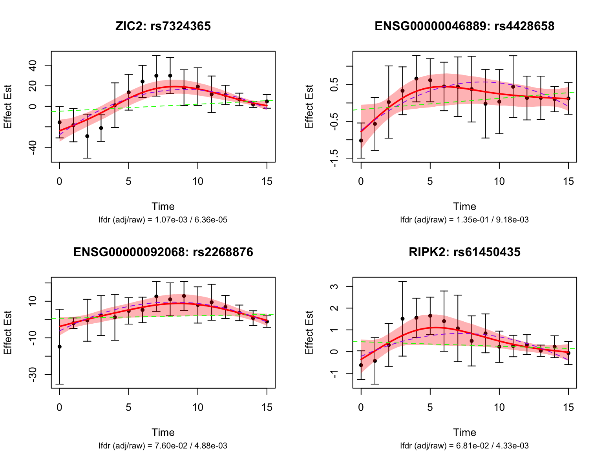
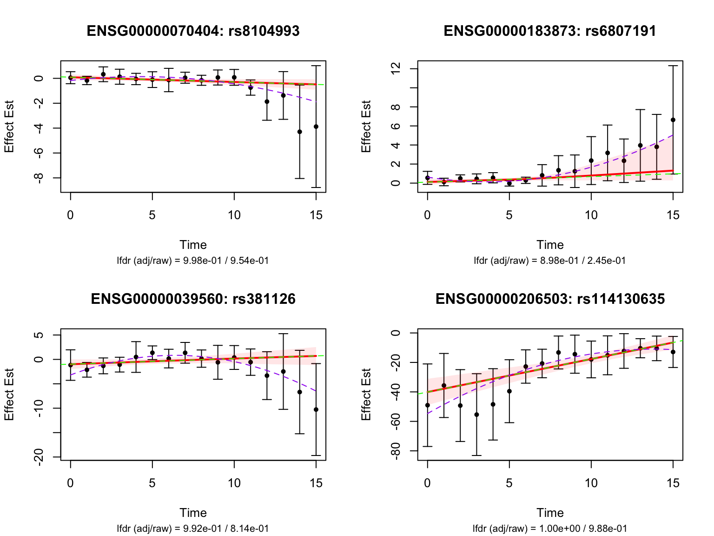
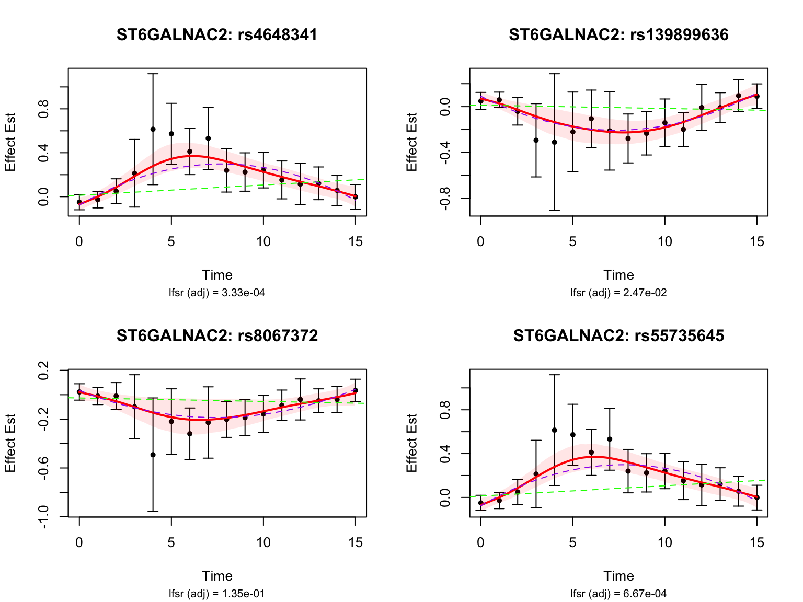
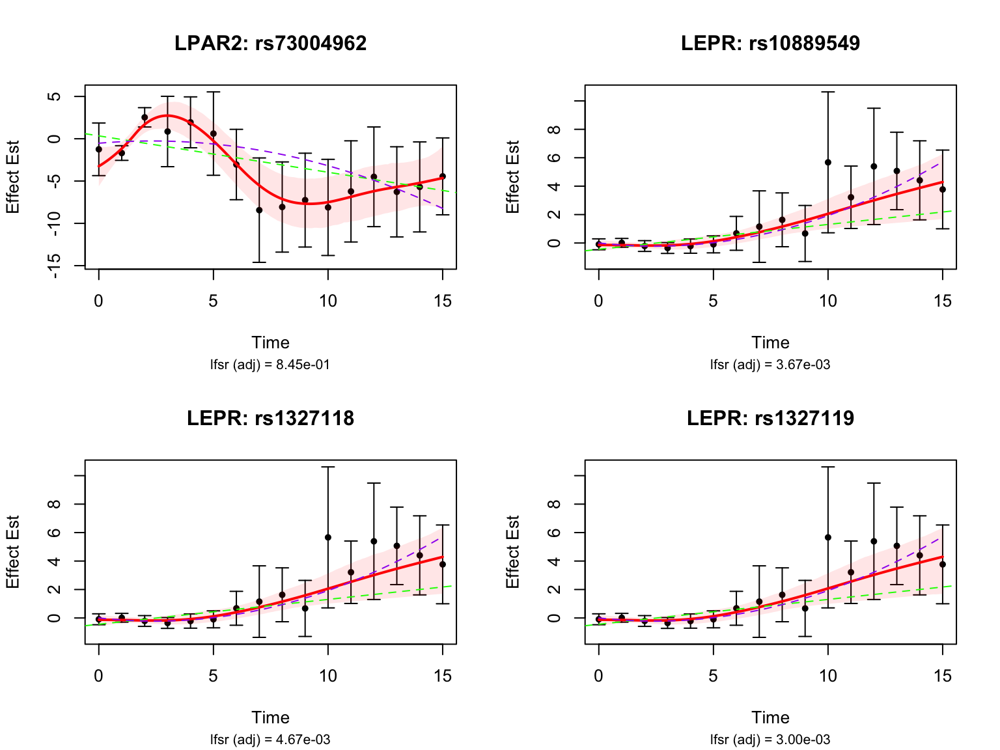
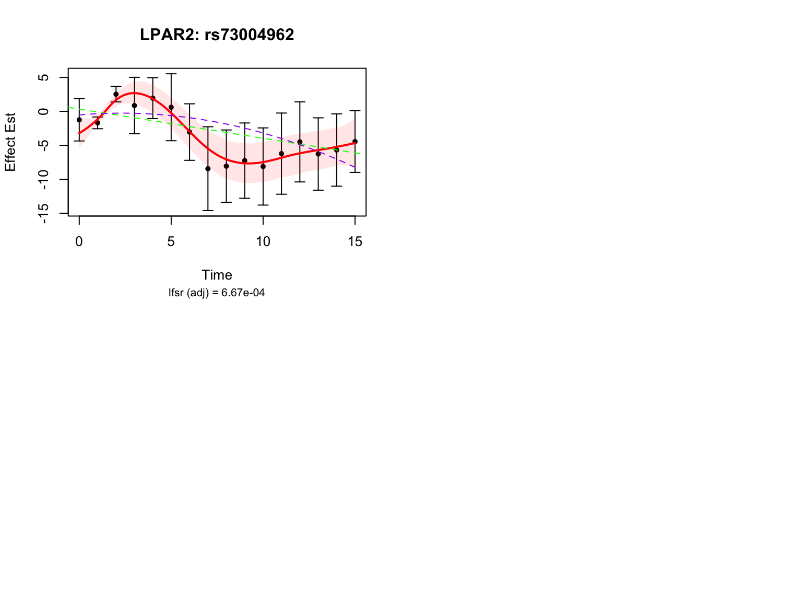

Nonlinear Dynamic eQTL analysis on iPSC
Ziang Zhang
2025-02-21
Last updated: 2025-12-16
Checks: 7 0
Knit directory: fashr-paper-stephenslab/
This reproducible R Markdown analysis was created with workflowr (version 1.7.2). The Checks tab describes the reproducibility checks that were applied when the results were created. The Past versions tab lists the development history.
Great! Since the R Markdown file has been committed to the Git repository, you know the exact version of the code that produced these results.
Great job! The global environment was empty. Objects defined in the global environment can affect the analysis in your R Markdown file in unknown ways. For reproduciblity it’s best to always run the code in an empty environment.
The command set.seed(20251109) was run prior to running
the code in the R Markdown file. Setting a seed ensures that any results
that rely on randomness, e.g. subsampling or permutations, are
reproducible.
Great job! Recording the operating system, R version, and package versions is critical for reproducibility.
Nice! There were no cached chunks for this analysis, so you can be confident that you successfully produced the results during this run.
Great job! Using relative paths to the files within your workflowr project makes it easier to run your code on other machines.
Great! You are using Git for version control. Tracking code development and connecting the code version to the results is critical for reproducibility.
The results in this page were generated with repository version 8914a44. See the Past versions tab to see a history of the changes made to the R Markdown and HTML files.
Note that you need to be careful to ensure that all relevant files for
the analysis have been committed to Git prior to generating the results
(you can use wflow_publish or
wflow_git_commit). workflowr only checks the R Markdown
file, but you know if there are other scripts or data files that it
depends on. Below is the status of the Git repository when the results
were generated:
Ignored files:
Ignored: .DS_Store
Ignored: .Rhistory
Ignored: .Rproj.user/
Ignored: data/.DS_Store
Ignored: data/toy_example/
Ignored: output/.DS_Store
Untracked files:
Untracked: data/appendixB/
Untracked: data/dynamic_eQTL_real/
Untracked: output/appendixB/
Untracked: output/dynamic_eQTL_real/
Untracked: output/toy_example/
Note that any generated files, e.g. HTML, png, CSS, etc., are not included in this status report because it is ok for generated content to have uncommitted changes.
These are the previous versions of the repository in which changes were
made to the R Markdown
(analysis/nonlinear_dynamic_eQTL_real.rmd) and HTML
(docs/nonlinear_dynamic_eQTL_real.html) files. If you’ve
configured a remote Git repository (see ?wflow_git_remote),
click on the hyperlinks in the table below to view the files as they
were in that past version.
| File | Version | Author | Date | Message |
|---|---|---|---|---|
| Rmd | 8914a44 | Ziang Zhang | 2025-12-16 | workflowr::wflow_publish("analysis/nonlinear_dynamic_eQTL_real.rmd") |
| html | 1c558a1 | Ziang Zhang | 2025-12-16 | Build site. |
| Rmd | a7fabd4 | Ziang Zhang | 2025-12-16 | workflowr::wflow_publish("analysis/nonlinear_dynamic_eQTL_real.rmd") |
| html | e9f6ed7 | Ziang Zhang | 2025-11-09 | Build site. |
| Rmd | bb17d9a | Ziang Zhang | 2025-11-09 | workflowr::wflow_publish("analysis/nonlinear_dynamic_eQTL_real.rmd") |
knitr::opts_chunk$set(fig.width = 8, fig.height = 6)
library(fashr)
library(biomaRt)
mart <- useEnsembl(biomart = "genes", dataset = "hsapiens_gene_ensembl")
result_dir <- paste0(getwd(), "/output/dynamic_eQTL_real")
data_dir <- paste0(getwd(), "/data/dynamic_eQTL_real")
code_dir <- paste0(getwd(), "/code/dynamic_eQTL_real")
log_prec <- seq(0,10, by = 0.2)
fine_grid <- sort(c(0, exp(-0.5*log_prec)))Obtain the effect size of eQTLs
We use the processed (expression & genotype) data of Strober et.al, 2019 to perform the eQTL analysis.
For the association testing, we use a linear regression model for each gene-variant pair at each time point. Following the practice in Strober et.al, we adjust for the first five PCs.
The code to perform this step can be found in the script
dynamic_eQTL_real/00_eQTLs.R from the code directory.
After this step, we have the effect size of eQTLs for each gene-variant pair at each time point, as well as its standard error.
Fitting FASH
To fit the FASH model on \(\{\beta_i(t_j), s_{ij}\}_{i\in N,j \in [16]}\), we consider fitting two FASH models:
A FASH model based on first order IWP (testing for dynamic eQTLs: \(H_0: \beta_i(t)=c\)).
A FASH model based on second order IWP (testing for nonlinear-dynamic eQTLs: \(H_0: \beta_i(t)=c_1+c_2t\)).
The code to perform this step can be found in the script
dynamic_eQTL_real/01_fash.R from the code directory.
We will directly load the fitted FASH models from the output directory.
load(paste0(result_dir, "/fash_fit2_all.RData"))We will load the datasets from the fitted FASH object:
datasets <- fash_fit2$fash_data$data_list
for (i in 1:length(datasets)) {
datasets[[i]]$SE <- fash_fit2$fash_data$S[[i]]
}
all_genes <- unique(sapply(strsplit(names(datasets), "_"), "[[", 1))
full_map <- getBM(
attributes = c("hgnc_symbol", "ensembl_gene_id"),
filters = "ensembl_gene_id",
values = all_genes,
mart = mart
)In this analysis, we will focus on the FASH(2) model that assumes a second order IWP and tests for nonlinear dynamic eQTLs.
Let’s take a quick overview of the fitted FASH model:
log_prec <- seq(0,10, by = 0.2)
fine_grid <- sort(c(0, exp(-0.5*log_prec)))
fash_fit2 <- fash(Y = "beta", smooth_var = "time", S = "SE", data_list = datasets,
num_basis = 20, order = 2, betaprec = 0,
pred_step = 1, penalty = 10, grid = fine_grid,
num_cores = num_cores, verbose = TRUE)
save(fash_fit2, file = "./results/fash_fit2_all.RData")fash_fit2Fitted fash Object
-------------------
Number of datasets: 1009173
Likelihood: gaussian
Number of PSD grid values: 52 (initial), 9 (non-trivial)
Order of Integrated Wiener Process (IWP): 2As well as the estimated priors:
fash_fit2$prior_weights psd prior_weight
1 0.000000000 9.872378e-01
2 0.006737947 1.209985e-04
3 0.020241911 5.257484e-03
4 0.022370772 2.211188e-03
5 0.055023220 1.113735e-03
6 0.060810063 3.628552e-03
7 0.246596964 3.827515e-04
8 0.449328964 1.965219e-05
9 1.000000000 2.786579e-05Problem with \(\pi_0\) estimation
The original MLE estimated \(\pi_0\) is 0.9872378. This could be under-estimated due to model-misspecification under the alternative hypothesis. To account for this, we will consider the following approaches:
(i): A conservative estimate of \(\pi_0\) based on the BF procedure:
fash_fit2_update <- BF_update(fash_fit2, plot = FALSE)
fash_fit2_update$prior_weights
save(fash_fit2_update, file = paste0(result_dir, "/fash_fit2_update.RData"))The conservative estimate is 0.9992301, which is much more conservative.
(ii): Instead of looking at the FDR which is based on the estimated \(\pi_0\), we can use the minimum local false sign rate (\(\text{min-lfsr}_i\)) to measure significance: \[ \text{min-lfsr}_i = \min_{t} \left\{ \text{lfsr}(W_i(t)) \right\}, \] where \(W_i(t) = \beta_i(t) - \beta_i(0)\).
Detecting Nonlinear dynamic eQTLs
We will use the updated FASH model (2) to detect nonlinear dynamic eQTLs.
alpha <- 0.05
test2 <- fdr_control(fash_fit2_update, alpha = alpha, plot = F)96 datasets are significant at alpha level 0.05. Total datasets tested: 1009173. fash_highlighted2 <- test2$fdr_results$index[test2$fdr_results$FDR <= alpha]
test2_before <- fdr_control(fash_fit2, alpha = alpha, plot = F)343 datasets are significant at alpha level 0.05. Total datasets tested: 1009173. fash_highlighted2_before <- test2_before$fdr_results$index[test2_before$fdr_results$FDR <= alpha]How many pairs are detected?
pairs_highlighted2 <- names(datasets)[fash_highlighted2]
length(pairs_highlighted2)[1] 96length(pairs_highlighted2)/length(datasets)[1] 9.51274e-05What is the number before the BF adjustment?
pairs_highlighted2_before <- names(datasets)[fash_highlighted2_before]
length(pairs_highlighted2_before)[1] 343length(pairs_highlighted2_before)/length(datasets)[1] 0.0003398823How many unique genes are detected?
genes_highlighted2 <- unique(sapply(strsplit(pairs_highlighted2, "_"), "[[", 1))
length(genes_highlighted2)[1] 27length(genes_highlighted2)/length(all_genes)[1] 0.004243948Before the BF adjustment?
genes_highlighted2_before <- unique(sapply(strsplit(pairs_highlighted2_before, "_"), "[[", 1))
length(genes_highlighted2_before)[1] 63length(genes_highlighted2_before)/length(all_genes)[1] 0.009902546Visualize top-ranked pairs:

Some examples of null pairs:

Comparing with Strober et.al
We will compare the detected dynamic eQTLs with the results from Strober et.al.
── Attaching core tidyverse packages ──────────────────────── tidyverse 2.0.0 ──
✔ dplyr 1.1.4 ✔ readr 2.1.5
✔ forcats 1.0.1 ✔ stringr 1.5.2
✔ ggplot2 4.0.0 ✔ tibble 3.3.0
✔ lubridate 1.9.4 ✔ tidyr 1.3.1
✔ purrr 1.1.0
── Conflicts ────────────────────────────────────────── tidyverse_conflicts() ──
✖ dplyr::filter() masks stats::filter()
✖ dplyr::lag() masks stats::lag()
✖ dplyr::select() masks biomaRt::select()
✖ tidyr::unite() masks ggVennDiagram::unite()
ℹ Use the conflicted package (<http://conflicted.r-lib.org/>) to force all conflicts to become errorsLet’s take a look at the overlap between the two methods used in Strober et.al and FASH (order 2):

Let’s take a look at the 4 pairs that are least significant from FASH:

Let’s also look at the genes that were missed by FASH, but detected by Strober et.al. In this case, we will pick the most significant pair for each gene in FASH:

Classifying nonlinear dynamic eQTLs
Following the definition in Strober et.al, we will classify the detected eQTLs into different categories:
Early: eQTLs with strongest effect during the first three days: \(\max_{t\leq3} |\beta(t)| - \max_{t> 3} |\beta(t)| > 0\).
Late: eQTLs with strongest effect during the last four days: \(\max_{t\geq 12} |\beta(t)| - \max_{t< 12} |\beta(t)| > 0\).
Middle: eQTLs with strongest effect during days 4-11: \(\max_{4\leq t\leq 11} |\beta(t)| - \max_{t> 11 | t< 4} |\beta(t)| > 0\).
Switch: eQTLs with effect sign switch during the time course: ${(t)+,(t)-}-c $ where \(c\) is a threshold that we set to 0.25 (which means with two alleles, the maximal difference of effect size is at least \(\geq 2\times\min\{\max\beta(t)^+,\max\beta(t)^-\}\times2 \geq 2 \times 0.25 \times 2 = 1\)).
We first take a look at the significant pairs detected by FASH (order 2), and classify them based on the false sign rate (lfsr):
smooth_var_refined = seq(0,15, by = 0.1)
functional_early <- function(x){
max(abs(x[smooth_var_refined <= 3])) - max(abs(x[smooth_var_refined > 3]))
}
testing_early_nonlin_dyn <- testing_functional(functional_early,
lfsr_cal = function(x){mean(x <= 0)},
fash = fash_fit2,
indices = fash_highlighted2,
smooth_var = smooth_var_refined)How many pairs and how many unique genes are classified as early dynamic eQTLs?
load(paste0(result_dir, "/classify_nonlin_dyn_eQTLs_early.RData"))
early_indices <- testing_early_nonlin_dyn$indices[testing_early_nonlin_dyn$cfsr <= alpha]
length(early_indices)[1] 0early_genes <- unique(sapply(strsplit(names(datasets)[early_indices], "_"), "[[", 1))
length(early_genes)[1] 0How many pairs are classified as middle dynamic eQTLs?
functional_middle <- function(x){
max(abs(x[smooth_var_refined <= 11 & smooth_var_refined >= 4])) - max(abs(x[smooth_var_refined > 11]), abs(x[smooth_var_refined < 4]))
}
testing_middle_nonlin_dyn <- testing_functional(functional_middle,
lfsr_cal = function(x){mean(x <= 0)},
fash = fash_fit2,
indices = fash_highlighted2,
num_cores = num_cores,
smooth_var = smooth_var_refined)load(paste0(result_dir, "/classify_nonlin_dyn_eQTLs_middle.RData"))
middle_indices <- testing_middle_nonlin_dyn$indices[testing_middle_nonlin_dyn$cfsr <= alpha]
length(middle_indices)[1] 32middle_genes <- unique(sapply(strsplit(names(datasets)[middle_indices], "_"), "[[", 1))
length(middle_genes)[1] 7Take a look at their results:

How many pairs are classified as late dynamic eQTLs?
functional_late <- function(x){
max(abs(x[smooth_var_refined >= 12])) - max(abs(x[smooth_var_refined < 12]))
}
testing_late_nonlin_dyn <- testing_functional(functional_late,
lfsr_cal = function(x){mean(x <= 0)},
fash = fash_fit2,
indices = fash_highlighted2,
num_cores = num_cores,
smooth_var = smooth_var_refined)load(paste0(result_dir, "/classify_nonlin_dyn_eQTLs_late.RData"))
late_indices <- testing_late_nonlin_dyn$indices[testing_late_nonlin_dyn$cfsr <= alpha]
length(late_indices)[1] 45late_genes <- unique(sapply(strsplit(names(datasets)[late_indices], "_"), "[[", 1))
length(late_genes)[1] 14Let’s take a look at the top-ranked late dynamic eQTLs:

How many pairs and how many unique genes are classified as switch dynamic eQTLs?
switch_threshold <- 0.25
functional_switch <- function(x){
# compute the radius of x, measured by deviation from 0 from below and from above
x_pos <- x[x > 0]
x_neg <- x[x < 0]
if(length(x_pos) == 0 || length(x_neg) == 0){
return(0)
}
min(max(abs(x_pos)), max(abs(x_neg))) - switch_threshold
}
testing_switch_nonlin_dyn <- testing_functional(functional_switch,
lfsr_cal = function(x){mean(x <= 0)},
fash = fash_fit2,
indices = fash_highlighted2,
num_cores = num_cores,
smooth_var = smooth_var_refined)load(paste0(result_dir, "/classify_nonlin_dyn_eQTLs_switch.RData"))
switch_indices <- testing_switch_nonlin_dyn$indices[testing_switch_nonlin_dyn$cfsr <= alpha]
length(switch_indices)[1] 9switch_genes <- unique(sapply(strsplit(names(datasets)[switch_indices], "_"), "[[", 1))
length(switch_genes)[1] 9Let’s take a look at the top-ranked switch dynamic eQTLs:

Gene Set Enrichment Analysis
library(clusterProfiler)
library(tidyverse)
library(msigdbr)
library(org.Hs.eg.db) # Assuming human genes
library(biomaRt)
library(cowplot)
# Retrieve Hallmark gene sets for Homo sapiens
m_t2g <- msigdbr(species = "Homo sapiens", category = "H") %>%
dplyr::select(gs_name, entrez_gene)
mart <- useMart("ensembl", dataset = "hsapiens_gene_ensembl")
## A function to check gene-enrichment
## Retrieve Hallmark gene sets for Homo sapiens (use Ensembl IDs)
m_t2g <- msigdbr(species = "Homo sapiens", category = "H") %>%
mutate(ensembl_use = dplyr::coalesce(ensembl_gene, db_ensembl_gene)) %>%
dplyr::filter(!is.na(ensembl_use)) %>%
dplyr::select(gs_name, ensembl_use) %>%
dplyr::distinct() # one row per (pathway, Ensembl) pair
## A function to check gene-enrichment using Ensembl IDs,
## forcing the universe to be exactly background_gene
enrich_set <- function(genes_selected,
background_gene,
q_val_cutoff = 0.05,
pvalueCutoff = 0.05) {
# ensure character vectors & unique
genes_selected_raw <- unique(as.character(genes_selected))
background_gene_raw <- unique(as.character(background_gene))
# we'll enforce that the test universe is exactly these:
universe_for_test <- background_gene_raw
# genes that are in Hallmark already
hallmark_genes <- unique(m_t2g$ensembl_use)
# background genes that are NOT in Hallmark (no annotation)
bg_not_in_hallmark <- setdiff(universe_for_test, hallmark_genes)
# extend TERM2GENE so that *all* background genes appear in it at least once
# add them to a dummy pathway that we will later drop
dummy_id <- "__DUMMY_BACKGROUND__"
if (length(bg_not_in_hallmark) > 0) {
dummy_t2g <- tibble(
gs_name = dummy_id,
ensembl_use = bg_not_in_hallmark
)
TERM2GENE_full <- bind_rows(m_t2g, dummy_t2g)
} else {
TERM2GENE_full <- m_t2g
}
# also make sure selected genes are a subset of the universe
genes_sel_used <- intersect(genes_selected_raw, universe_for_test)
# message("Original selected genes: ", length(genes_selected_raw),
# " ; used in enrichment: ", length(genes_sel_used))
# message("Universe size (background_gene): ", length(universe_for_test))
enrich_res <- enricher(
gene = genes_sel_used,
TERM2GENE = TERM2GENE_full,
universe = universe_for_test,
pAdjustMethod = "BH",
qvalueCutoff = q_val_cutoff,
pvalueCutoff = pvalueCutoff
)
if (is.null(enrich_res) || nrow(enrich_res@result) == 0L) {
return(enrich_res)
}
df <- enrich_res@result
# drop the dummy term from results
df <- df %>% dplyr::filter(ID != dummy_id)
# keep original ratios for reference
df$GeneRatio_orig <- df$GeneRatio
df$BgRatio_orig <- df$BgRatio
# now recompute ratios using exactly:
# - denominator for GeneRatio = number of selected genes in universe
# - denominator for BgRatio = number of background genes
n_sel_total <- length(genes_sel_used)
n_bg_total <- length(universe_for_test)
df$GeneRatio_fixed <- paste0(df$Count, "/", n_sel_total)
df$BgRatio_fixed <- paste0(df$setSize, "/", n_bg_total)
enrich_res@result <- df
enrich_res
}Among all the genes highlighted by FASH:
result <- enrich_set(genes_selected = genes_highlighted2, background_gene = all_genes)
result@result %>%
filter(pvalue < 0.05) %>%
dplyr::select(GeneRatio, BgRatio, pvalue, qvalue) GeneRatio BgRatio pvalue qvalue
HALLMARK_MYOGENESIS 2/27 67/6362 0.03237802 0.1841743
HALLMARK_FATTY_ACID_METABOLISM 2/27 72/6362 0.03694955 0.1841743
HALLMARK_ESTROGEN_RESPONSE_LATE 2/27 79/6362 0.04374140 0.1841743Among the genes highlighted by FASH that are classified as middle dynamic eQTLs:
result <- enrich_set(genes_selected = middle_genes, background_gene = all_genes)
result@result %>%
filter(pvalue < 0.05) %>%
dplyr::select(GeneRatio, BgRatio, pvalue, qvalue) GeneRatio BgRatio pvalue qvalue
HALLMARK_INTERFERON_ALPHA_RESPONSE 1/7 27/6362 0.02934573 0.07629487
HALLMARK_ALLOGRAFT_REJECTION 1/7 36/6362 0.03896214 0.07629487
HALLMARK_INFLAMMATORY_RESPONSE 1/7 43/6362 0.04638500 0.07629487Among the genes highlighted by FASH that are classified as late dynamic eQTLs:
result <- enrich_set(genes_selected = late_genes, background_gene = all_genes)
result@result %>%
filter(pvalue < 0.05) %>%
dplyr::select(GeneRatio, BgRatio, pvalue, qvalue) GeneRatio BgRatio pvalue qvalue
HALLMARK_MYOGENESIS 2/14 67/6362 0.009163424 0.04822855
HALLMARK_IL6_JAK_STAT3_SIGNALING 1/14 21/6362 0.045278647 0.10516379Among the genes highlighted by FASH that are classified as switch dynamic eQTLs:
result <- enrich_set(genes_selected = switch_genes, background_gene = all_genes)
result@result %>%
filter(pvalue < 0.05) %>%
dplyr::select(GeneRatio, BgRatio, pvalue, qvalue) GeneRatio BgRatio pvalue qvalue
HALLMARK_MYOGENESIS 2/9 67/6362 0.003750287 0.02763370
HALLMARK_IL6_JAK_STAT3_SIGNALING 1/9 21/6362 0.029336610 0.08333513
HALLMARK_INTERFERON_ALPHA_RESPONSE 1/9 27/6362 0.037576748 0.08333513
HALLMARK_ALLOGRAFT_REJECTION 1/9 36/6362 0.049820388 0.08333513
sessionInfo()R version 4.5.1 (2025-06-13)
Platform: aarch64-apple-darwin20
Running under: macOS Sequoia 15.6.1
Matrix products: default
BLAS: /Library/Frameworks/R.framework/Versions/4.5-arm64/Resources/lib/libRblas.0.dylib
LAPACK: /Library/Frameworks/R.framework/Versions/4.5-arm64/Resources/lib/libRlapack.dylib; LAPACK version 3.12.1
locale:
[1] en_US.UTF-8/en_US.UTF-8/en_US.UTF-8/C/en_US.UTF-8/en_US.UTF-8
time zone: America/Chicago
tzcode source: internal
attached base packages:
[1] stats4 stats graphics grDevices utils datasets methods
[8] base
other attached packages:
[1] cowplot_1.2.0 org.Hs.eg.db_3.21.0 AnnotationDbi_1.70.0
[4] IRanges_2.42.0 S4Vectors_0.46.0 Biobase_2.68.0
[7] BiocGenerics_0.54.1 generics_0.1.4 msigdbr_25.1.1
[10] clusterProfiler_4.16.0 lubridate_1.9.4 forcats_1.0.1
[13] stringr_1.5.2 dplyr_1.1.4 purrr_1.1.0
[16] readr_2.1.5 tidyr_1.3.1 tibble_3.3.0
[19] ggplot2_4.0.0 tidyverse_2.0.0 ggVennDiagram_1.5.4
[22] biomaRt_2.64.0 fashr_0.1.42 workflowr_1.7.2
loaded via a namespace (and not attached):
[1] RColorBrewer_1.1-3 rstudioapi_0.17.1 jsonlite_2.0.0
[4] magrittr_2.0.4 ggtangle_0.0.8 farver_2.1.2
[7] rmarkdown_2.30 fs_1.6.6 vctrs_0.6.5
[10] memoise_2.0.1 ggtree_3.16.3 mixsqp_0.3-54
[13] htmltools_0.5.8.1 progress_1.2.3 curl_7.0.0
[16] gridGraphics_0.5-1 sass_0.4.10 bslib_0.9.0
[19] plyr_1.8.9 httr2_1.2.1 cachem_1.1.0
[22] TMB_1.9.18 igraph_2.2.0 whisker_0.4.1
[25] lifecycle_1.0.4 pkgconfig_2.0.3 gson_0.1.0
[28] Matrix_1.7-3 R6_2.6.1 fastmap_1.2.0
[31] GenomeInfoDbData_1.2.14 digest_0.6.37 numDeriv_2016.8-1.1
[34] aplot_0.2.9 enrichplot_1.28.4 colorspace_2.1-2
[37] patchwork_1.3.2 ps_1.9.1 rprojroot_2.1.1
[40] irlba_2.3.5.1 RSQLite_2.4.3 filelock_1.0.3
[43] labeling_0.4.3 timechange_0.3.0 httr_1.4.7
[46] compiler_4.5.1 bit64_4.6.0-1 withr_3.0.2
[49] S7_0.2.0 BiocParallel_1.42.2 DBI_1.2.3
[52] R.utils_2.13.0 rappdirs_0.3.3 tools_4.5.1
[55] ape_5.8-1 httpuv_1.6.16 R.oo_1.27.1
[58] glue_1.8.0 callr_3.7.6 nlme_3.1-168
[61] GOSemSim_2.34.0 promises_1.3.3 grid_4.5.1
[64] getPass_0.2-4 reshape2_1.4.4 fgsea_1.34.2
[67] gtable_0.3.6 tzdb_0.5.0 R.methodsS3_1.8.2
[70] data.table_1.17.8 hms_1.1.3 xml2_1.4.0
[73] XVector_0.48.0 ggrepel_0.9.6 pillar_1.11.1
[76] babelgene_22.9 yulab.utils_0.2.1 later_1.4.4
[79] splines_4.5.1 treeio_1.32.0 BiocFileCache_2.16.2
[82] lattice_0.22-7 bit_4.6.0 tidyselect_1.2.1
[85] GO.db_3.21.0 Biostrings_2.76.0 knitr_1.50
[88] git2r_0.36.2 xfun_0.54 LaplacesDemon_16.1.6
[91] stringi_1.8.7 UCSC.utils_1.4.0 lazyeval_0.2.2
[94] ggfun_0.2.0 yaml_2.3.10 evaluate_1.0.5
[97] codetools_0.2-20 qvalue_2.40.0 ggplotify_0.1.3
[100] cli_3.6.5 processx_3.8.6 jquerylib_0.1.4
[103] dichromat_2.0-0.1 Rcpp_1.1.0 GenomeInfoDb_1.44.3
[106] dbplyr_2.5.1 png_0.1-8 parallel_4.5.1
[109] assertthat_0.2.1 blob_1.2.4 prettyunits_1.2.0
[112] DOSE_4.2.0 tidytree_0.4.6 scales_1.4.0
[115] crayon_1.5.3 rlang_1.1.6 fastmatch_1.1-6
[118] KEGGREST_1.48.1